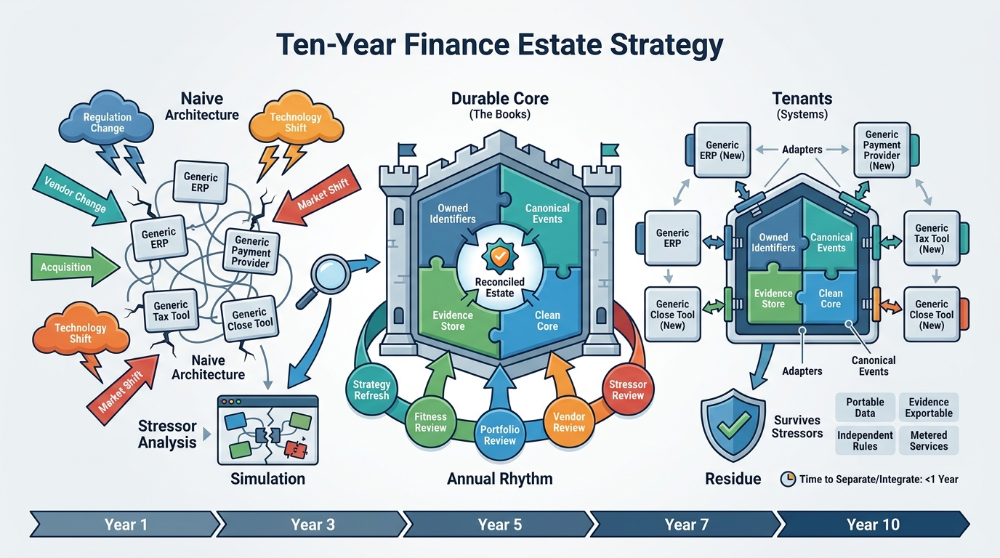

Part IV — LEADERSHIP: The Chief Architect's Agenda
Built to Be Replaced: Evolving the Finance Estate Over a Decade

Image generated by Google Gemini (gemini-3-pro-image-preview)
Part IV — LEADERSHIP: The Chief Architect's Agenda

Image generated by Google Gemini (gemini-3-pro-image-preview)